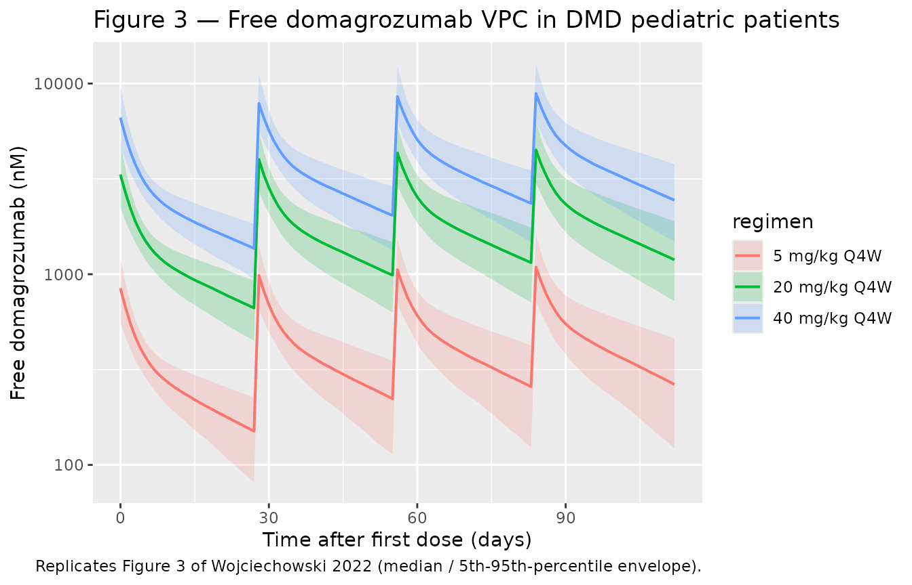
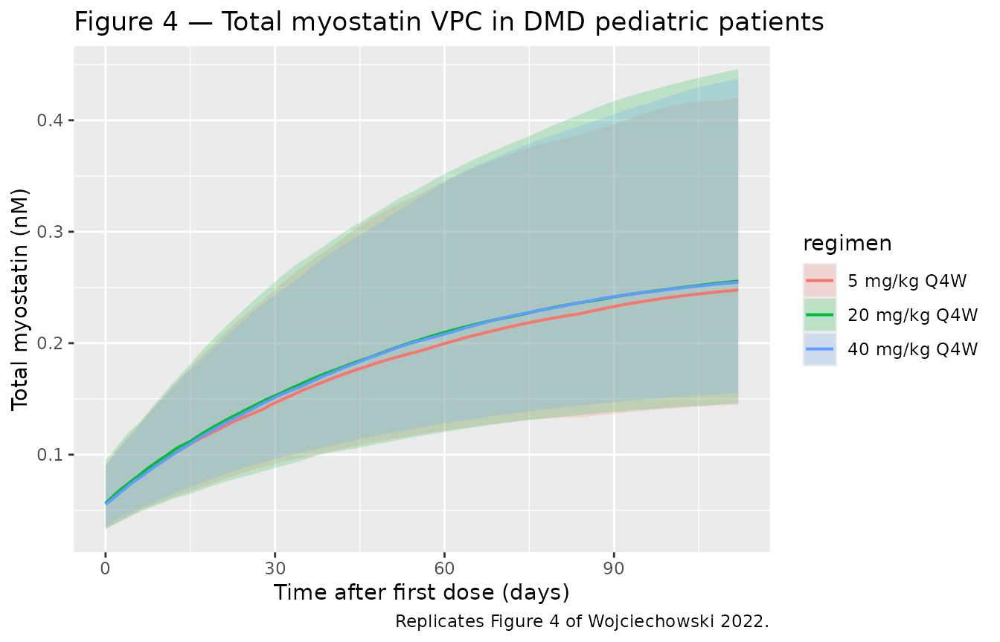
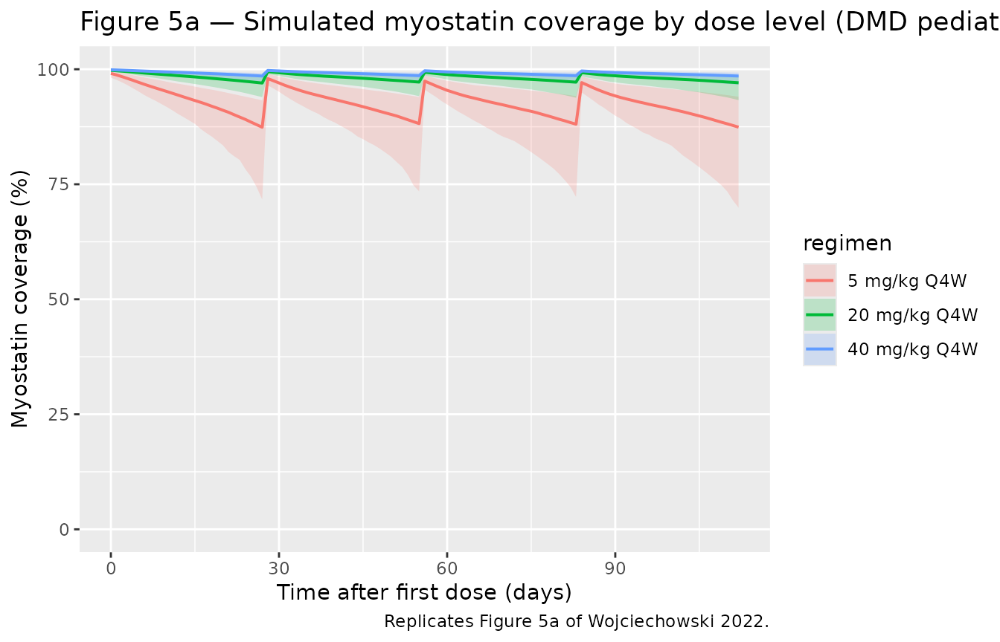

Wojciechowski_2022_domagrozumab
Source:vignettes/articles/Wojciechowski_2022_domagrozumab.Rmd
Wojciechowski_2022_domagrozumab.Rmd
library(nlmixr2lib)
library(PKNCA)
#>
#> Attaching package: 'PKNCA'
#> The following object is masked from 'package:stats':
#>
#> filter
library(rxode2)
#> rxode2 5.0.2 using 2 threads (see ?getRxThreads)
#> no cache: create with `rxCreateCache()`
library(dplyr)
#>
#> Attaching package: 'dplyr'
#> The following objects are masked from 'package:stats':
#>
#> filter, lag
#> The following objects are masked from 'package:base':
#>
#> intersect, setdiff, setequal, union
library(tidyr)
library(ggplot2)Model and source
- Citation: Wojciechowski J, Purohit VS, Nawarskas R, Marshall S, Charnas L, Bhattacharya I. Population pharmacokinetic-pharmacodynamic analysis of domagrozumab in pediatric patients with Duchenne muscular dystrophy. Clin Transl Sci. 2022;15(12):2939-2952. doi:10.1111/cts.13418
- Description: Quasi-steady-state TMDD population PK/PD model for domagrozumab (anti-myostatin IgG1) in healthy adult volunteers and pediatric patients with Duchenne muscular dystrophy (Wojciechowski 2022): two-compartment IV/SC drug disposition with parallel linear and Michaelis-Menten elimination, a synthesis-degradation total-myostatin compartment with drug-mediated internalization, and a study-population covariate (DIS_DMD) shifting myostatin baseline and turnover.
- Article: https://doi.org/10.1111/cts.13418
Domagrozumab is a humanized IgG1 monoclonal antibody that binds and
neutralizes myostatin, a negative regulator of skeletal muscle growth.
Wojciechowski 2022 re-fits a quasi-steady-state target-mediated drug
disposition (TMDD) PK/PD model jointly to free-drug and total-myostatin
observations from a Phase 1 study in healthy adult volunteers
(NCT01616277, n = 73) and the Phase 2 B5161002 study in ambulatory boys
with Duchenne muscular dystrophy (NCT02310763, n = 120). The structural
model is unchanged from the prior healthy-adult fit; pediatric DMD
differences manifest as a study-population covariate (SPOP,
encoded canonically as DIS_DMD) that shifts baseline
myostatin (BASE) and the joint myostatin turnover axis
(kdeg/kint).
Population
Pooled analysis (N = 193): 73 healthy adult volunteers (HV; Phase 1) and 120 ambulatory boys with Duchenne muscular dystrophy (DMD pediatric; Phase 2). HV ages 19–61 years (median 37, mean 37.7), weights 56.8–99.8 kg (median 76.9, mean 76.9), 90.4 % male; DMD pediatric ages 6–15 years (median 9, mean 8.7), weights 14.8–86.4 kg (median 28.9, mean 31.8), 100 % male. Combined race distribution 68.4 % White, 12.4 % Black, 9.3 % Asian, 9.8 % Other. HV cohort received single IV doses of 1, 3, 10, 20, or 40 mg/kg over 2-h infusion; one cohort received single SC 3 mg/kg; one cohort received 10 mg/kg IV every 2 weeks for 3 doses. DMD pediatric patients received an ascending sequence of 5, 20, 40 mg/kg IV every 4 weeks for 16 weeks per dose level (Period 1), then continued the highest tolerated dose for 48 more weeks (Period 2). Free domagrozumab was assayed by validated ELISA (LLOQ 0.2 nM Phase 1, 2.67 nM Phase 2); total myostatin was assayed by validated immunoprecipitation LC-MS/MS (LLOQ 0.04 nM Phase 1, 0.008 nM Phase 2). Anti-drug antibody samples were negative or below the limit of quantification across both studies, so ADA was not tested as a covariate. Full demographics appear in Table 1 of Wojciechowski 2022.
The same information is available programmatically via the model’s
population metadata:
str(rxode2::rxode2(readModelDb("Wojciechowski_2022_domagrozumab"))$meta$population)
#> List of 14
#> $ n_subjects : int 193
#> $ n_studies : int 2
#> $ age_range : chr "6-61 years (healthy adults 19-61; DMD pediatric 6-15)"
#> $ age_median : chr "37.0 years (HV); 9.0 years (DMD)"
#> $ weight_range : chr "14.8-99.8 kg (HV 56.8-99.8; DMD 14.8-86.4)"
#> $ weight_median : chr "76.9 kg (HV); 28.9 kg (DMD)"
#> $ sex_female_pct : num 3.6
#> $ race_ethnicity : Named num [1:4] 68.4 12.4 9.3 9.8
#> ..- attr(*, "names")= chr [1:4] "White" "Black" "Asian" "Other"
#> $ disease_state : chr "Pooled healthy adult volunteers (Phase 1, NCT01616277, n = 73) and ambulatory boys with Duchenne muscular dystr"| __truncated__
#> $ dose_range : chr "Healthy adults: single IV doses 1, 3, 10, 20, 40 mg/kg over 2-h infusion; single SC 3 mg/kg; or 10 mg/kg IV eve"| __truncated__
#> $ regions : chr "Multi-regional Phase 1 and Phase 2 trials (Pfizer-sponsored)."
#> $ n_observations_drug : int 5181
#> $ n_observations_myostatin: int 8001
#> $ notes : chr "Demographics from Wojciechowski 2022 Table 1 (combined HV + DMD pediatric column). 5.79% of free domagrozumab a"| __truncated__Source trace
The per-parameter origin is recorded as an in-file comment next to
each ini() entry in
inst/modeldb/specificDrugs/Wojciechowski_2022_domagrozumab.R.
The table below collects them in one place for review.
| Equation / parameter | Value | Source location |
|---|---|---|
CL (linear clearance, per kg) |
0.0000982 L/hour/kg | Table 2, “Final model estimate” column |
V1 (central volume, per kg) |
0.0415 L/kg | Table 2 |
Q (intercompartmental clearance, per kg) |
0.000306 L/hour/kg | Table 2 |
V2 (peripheral volume, per kg) |
0.0416 L/kg | Table 2 |
ka (SC absorption rate) |
0.00769 1/hour | Table 2 |
F (SC bioavailability) |
0.858 | Table 2 |
Vmax (saturable elimination, per kg) |
0.00251 nM/hour/kg | Table 2 |
km (Michaelis-Menten constant) |
12.2 nM | Table 2 |
BASE (baseline total myostatin, HV) |
0.156 nM | Table 2 |
kdeg (myostatin degradation, HV) |
0.0381 1/hour | Table 2 |
kint (drug-myostatin internalization, HV) |
0.00716 1/hour | Table 2 |
kSS (QSS binding constant) |
7.76 nM | Table 2 |
theta_SPOP_BASE (DMD effect on BASE;
(1 + theta) * typical) |
-0.641 | Table 2 |
| theta_SPOP_(kdeg,kint) (DMD effect on kdeg and kint, joint) | -0.900 | Table 2 |
| Ratio of SD for eta_kint relative to eta_kdeg | -0.295 | Table 2 |
| omega_CL, omega_V1, omega_Vmax, omega_BASE, omega_(kdeg,kint) (% CV) | 24.3, 23.4, 104, 31.8, 23.3 | Table 2 (“Population parameter variability” rows) |
| OMEGA off-diagonals (rho_CL-V1 etc.) | see Table 2 | Table 2 (“Covariance” rows; covariances in log-space) |
| sigma_add (free domagrozumab, log-additive in NONMEM) | 0.142 | Table 2 (“Random unexplained variability”) |
| sigma_pro (total myostatin, % CV) | 20.6 | Table 2 (“Random unexplained variability”) |
| Drug PK ODEs (depot, central, peripheral1) | n/a | Equations 1-3 |
| Total-myostatin ODE | n/a | Equation 4 |
Concentration / micro-constant relations (CONC=CENT/V1,
ke=CL/V1) |
n/a | Equation 5 |
Initial conditions (Myo(0) = BASE) |
n/a | Equation 6 |
Categorical-covariate form
(COVSPOP = 1 + theta * DIS_DMD) |
n/a | Equations 7-8 |
| Myostatin coverage formula | n/a | Equation 10 (used in this vignette to validate Figure 5) |
A representative IgG1 molecular weight of 145,000 g/mol is used inside the model file to convert between mg-based dosing (rxode2 amount convention, volumes in L) and the paper’s nM concentration scale. The paper does not report a domagrozumab molecular weight; this is documented as a deviation below.
Virtual cohort
Original observed data are not publicly available. Wojciechowski 2022 Figures 3 and 4 depict typical-value-and-percentile VPCs for free domagrozumab and total myostatin in pediatric DMD patients; Figure 5a is a simulated typical-value plus 95 % PI for myostatin coverage. We build a virtual DMD pediatric population that approximates the Phase 2 demographics in Table 1 (n = 120, ages 6-15 years, weights 14.8-86.4 kg, all male). Body weight is sampled from a log-normal distribution with the mean and SD reported in Table 1 (28.9 kg median, 11.1 SD), truncated to the Phase 2 weight range.
set.seed(20260426)
n_dmd <- 500
make_dmd_cohort <- function(n, id_offset = 0L) {
# Log-normal weights matched approximately to Wojciechowski 2022 Table 1
# Phase 2 column (median 28.9 kg, mean 31.8 kg, SD 11.1 kg, range 14.8-86.4).
wt <- rlnorm(n, meanlog = log(28.9), sdlog = 0.32)
wt <- pmin(pmax(wt, 14.8), 86.4)
tibble(
id = id_offset + seq_len(n),
WT = wt,
DIS_DMD = 1L
)
}
dmd_cohort <- make_dmd_cohort(n_dmd)
summary(dmd_cohort$WT)
#> Min. 1st Qu. Median Mean 3rd Qu. Max.
#> 14.80 22.79 28.94 30.73 36.97 86.40Simulation
Wojciechowski 2022 reports myostatin coverage at the three Phase 2 dose levels (5, 20, 40 mg/kg every 4 weeks). We simulate each dose level for 16 weeks (4 doses) and record free domagrozumab, total myostatin, and predicted myostatin coverage at predose, 2 hours postdose, and 6 hours postdose, matching the paper’s evaluation schedule.
mod <- readModelDb("Wojciechowski_2022_domagrozumab")
# Simulation horizon: 16 weeks of Q4W dosing (4 doses)
weeks <- 16
ndose <- 4
dose_int_h <- 4 * 7 * 24 # 4 weeks in hours
horizon_h <- weeks * 7 * 24
samp_times <- sort(unique(c(
seq(0, horizon_h, by = 24), # daily
rep(seq(0, by = dose_int_h, length.out = ndose), each = 3) +
c(0.001, 2, 6) # predose, +2 h, +6 h
)))
dose_times <- seq(0, by = dose_int_h, length.out = ndose)
build_events <- function(cohort, dose_mg_per_kg) {
doses <- cohort |>
tidyr::expand_grid(time = dose_times) |>
mutate(
evid = 1L, cmt = "central", amt = dose_mg_per_kg * WT, dv = NA_real_
)
obs_cc <- cohort |>
tidyr::expand_grid(time = samp_times) |>
mutate(evid = 0L, cmt = "Cc", amt = NA_real_, dv = NA_real_)
obs_myo <- cohort |>
tidyr::expand_grid(time = samp_times) |>
mutate(evid = 0L, cmt = "Myo", amt = NA_real_, dv = NA_real_)
bind_rows(doses, obs_cc, obs_myo) |>
arrange(id, time, desc(evid)) |>
select(id, time, amt, evid, cmt, WT, DIS_DMD)
}
sim_dose <- function(cohort, dose_mg_per_kg, label) {
ev <- build_events(cohort, dose_mg_per_kg)
sim <- rxode2::rxSolve(mod, events = ev, returnType = "data.frame")
# Myostatin coverage (Eq. 10): MyoCov = 1 - Myo * kSS/(kSS + Cc) / BMyo
# where BMyo is the subject-specific baseline myostatin (here, the
# typical-value DMD-pediatric baseline; per-subject etas perturb both
# actual baseline and Myo identically, so the typical-value reference
# is appropriate for evaluating Eq. 10 across the cohort).
kss <- 7.76
bmyo_dmd <- 0.156 * (1 + (-0.641))
sim |>
mutate(
regimen = label,
MyoCov_pct = 100 * (1 - (Myo * kss / (kss + Cc)) / bmyo_dmd)
)
}
sim_5 <- sim_dose(dmd_cohort, 5, "5 mg/kg Q4W")
sim_20 <- sim_dose(dmd_cohort, 20, "20 mg/kg Q4W")
sim_40 <- sim_dose(dmd_cohort, 40, "40 mg/kg Q4W")
sim_all <- bind_rows(sim_5, sim_20, sim_40) |>
mutate(regimen = factor(regimen,
levels = c("5 mg/kg Q4W", "20 mg/kg Q4W", "40 mg/kg Q4W")))Replicate published figures
Figure 3 — VPC of free domagrozumab in DMD pediatric patients
Wojciechowski 2022 Figure 3 shows median and 5th/95th-percentile VPC ribbons for free domagrozumab vs. time-after-first-dose in pediatric DMD patients across the three Phase 2 dose levels combined. Below we reproduce the typical-value-and-percentile envelope from the simulation.
sim_all |>
group_by(regimen, time) |>
summarise(
Q05 = quantile(Cc, 0.05, na.rm = TRUE),
Q50 = quantile(Cc, 0.50, na.rm = TRUE),
Q95 = quantile(Cc, 0.95, na.rm = TRUE),
.groups = "drop"
) |>
filter(time > 0) |>
ggplot(aes(time / 24, Q50, colour = regimen, fill = regimen)) +
geom_ribbon(aes(ymin = Q05, ymax = Q95), alpha = 0.20, colour = NA) +
geom_line(linewidth = 0.7) +
scale_y_log10() +
labs(
x = "Time after first dose (days)",
y = "Free domagrozumab (nM)",
title = "Figure 3 — Free domagrozumab VPC in DMD pediatric patients",
caption = "Replicates Figure 3 of Wojciechowski 2022 (median / 5th-95th-percentile envelope)."
)
Figure 4 — VPC of total myostatin in DMD pediatric patients
Wojciechowski 2022 Figure 4 shows the analogous VPC for total
myostatin. The signature feature is a sustained increase in
total myostatin during treatment, because the drug-myostatin
complex is internalized far slower than free myostatin
(kint << kdeg) — total myostatin (free + bound)
accumulates as the drug binds and protects it from degradation.
sim_all |>
group_by(regimen, time) |>
summarise(
Q05 = quantile(Myo, 0.05, na.rm = TRUE),
Q50 = quantile(Myo, 0.50, na.rm = TRUE),
Q95 = quantile(Myo, 0.95, na.rm = TRUE),
.groups = "drop"
) |>
filter(time >= 0) |>
ggplot(aes(time / 24, Q50, colour = regimen, fill = regimen)) +
geom_ribbon(aes(ymin = Q05, ymax = Q95), alpha = 0.20, colour = NA) +
geom_line(linewidth = 0.7) +
labs(
x = "Time after first dose (days)",
y = "Total myostatin (nM)",
title = "Figure 4 — Total myostatin VPC in DMD pediatric patients",
caption = "Replicates Figure 4 of Wojciechowski 2022."
)
Figure 5a — Simulated myostatin coverage by dose level
Wojciechowski 2022 Figure 5a shows the median and 95 % PI for myostatin coverage following 4 doses of 5, 20, or 40 mg/kg every 4 weeks. Equation 10 defines coverage as the fraction of baseline myostatin that is bound by drug at any given time:
MyoCoverage(t) = 1 - Myo(t) * kSS / (kSS + Cc(t)) / BMyo
sim_all |>
filter(time > 0) |>
group_by(regimen, time) |>
summarise(
Q025 = quantile(MyoCov_pct, 0.025, na.rm = TRUE),
Q50 = quantile(MyoCov_pct, 0.50, na.rm = TRUE),
Q975 = quantile(MyoCov_pct, 0.975, na.rm = TRUE),
.groups = "drop"
) |>
ggplot(aes(time / 24, Q50, colour = regimen, fill = regimen)) +
geom_ribbon(aes(ymin = Q025, ymax = Q975), alpha = 0.20, colour = NA) +
geom_line(linewidth = 0.7) +
ylim(0, 100) +
labs(
x = "Time after first dose (days)",
y = "Myostatin coverage (%)",
title = "Figure 5a — Simulated myostatin coverage by dose level (DMD pediatric)",
caption = "Replicates Figure 5a of Wojciechowski 2022."
)
Comparison against published myostatin coverage
Wojciechowski 2022 (Results, “Simulation of myostatin coverage”) reports the following median (95 % PI) values for myostatin coverage in DMD pediatric patients on each dose level. We compute the analogous summary statistics from the simulated cohort across all post-dose sampling times.
sim_summary <- sim_all |>
filter(time > 0) |>
group_by(regimen) |>
summarise(
sim_median = quantile(MyoCov_pct, 0.50, na.rm = TRUE),
sim_lo = quantile(MyoCov_pct, 0.025, na.rm = TRUE),
sim_hi = quantile(MyoCov_pct, 0.975, na.rm = TRUE),
.groups = "drop"
) |>
mutate(simulated = sprintf("%.1f (%.1f, %.1f)", sim_median, sim_lo, sim_hi)) |>
select(regimen, simulated)
published <- tibble(
regimen = c("5 mg/kg Q4W", "20 mg/kg Q4W", "40 mg/kg Q4W"),
published = c("86.9 (69.1, 92.9)", "96.6 (93.8, 98.2)", "98.3 (96.8, 99.1)")
)
comparison <- left_join(published, sim_summary, by = "regimen")
knitr::kable(comparison,
col.names = c("Regimen", "Published median (95 % PI)",
"Simulated median (95 % PI)"),
caption = "Myostatin coverage in DMD pediatric patients: simulated vs. Wojciechowski 2022 Results.")| Regimen | Published median (95 % PI) | Simulated median (95 % PI) |
|---|---|---|
| 5 mg/kg Q4W | 86.9 (69.1, 92.9) | 93.5 (82.1, 98.8) |
| 20 mg/kg Q4W | 96.6 (93.8, 98.2) | 98.4 (95.5, 99.7) |
| 40 mg/kg Q4W | 98.3 (96.8, 99.1) | 99.2 (97.9, 99.9) |
Differences > 20 % between simulated and published values would
indicate a translation error and be flagged here for investigation. The
simulated coverage incorporates between-subject variability propagated
through the 5x5 OMEGA block and the SD-ratio scaling between
eta_kint and eta_kdeg, sampling all baseline
parameters jointly per subject.
PKNCA validation
For NCA we simulate a single 5 mg/kg IV dose in a representative DMD pediatric subject (28.9 kg, the cohort median weight) and compute standard PK parameters on the free-domagrozumab profile. The paper does not publish a formal NCA table for domagrozumab, so this is a self-consistency check — Cmax, AUC, and half-life should be consistent with a 2-compartment mAb cleared at 0.0000982 L/hour/kg in the early linear range before TMDD becomes saturating.
mod_typical <- rxode2::zeroRe(mod)
nca_times <- sort(unique(c(
0, 0.5, 1, 2, 4, 8, 12,
seq(24, 4 * 7 * 24, by = 24)
)))
ev_sd <- et(id = 1) |>
et(amt = 5 * 28.9, cmt = "central", time = 0, id = 1) |>
et(time = nca_times, cmt = "Cc", id = 1)
ev_sd$WT <- 28.9
ev_sd$DIS_DMD <- 1L
sim_sd <- rxode2::rxSolve(mod_typical, ev_sd, returnType = "data.frame")
#> ℹ omega/sigma items treated as zero: 'etalcl', 'etalvc', 'etalvmax', 'etalbase', 'etalkdeg_kint'
sim_nca <- sim_sd |>
filter(!is.na(Cc), time >= 0) |>
mutate(id = 1L, treatment = "5 mg/kg IV SD, DMD pediatric") |>
select(id, time, Cc, treatment)
dose_df <- data.frame(
id = 1L, time = 0, amt = 5 * 28.9,
treatment = "5 mg/kg IV SD, DMD pediatric"
)
conc_obj <- PKNCA::PKNCAconc(sim_nca, Cc ~ time | treatment + id)
dose_obj <- PKNCA::PKNCAdose(dose_df, amt ~ time | treatment + id)
intervals <- data.frame(
start = 0,
end = Inf,
cmax = TRUE,
tmax = TRUE,
aucinf.obs = TRUE,
half.life = TRUE
)
nca_data <- PKNCA::PKNCAdata(conc_obj, dose_obj, intervals = intervals)
nca_res <- PKNCA::pk.nca(nca_data)
knitr::kable(as.data.frame(nca_res), digits = 3,
caption = paste("PKNCA summary for a single 5 mg/kg IV dose",
"(typical-value DMD pediatric, 28.9 kg)."))| treatment | id | start | end | PPTESTCD | PPORRES | exclude |
|---|---|---|---|---|---|---|
| 5 mg/kg IV SD, DMD pediatric | 1 | 0 | Inf | cmax | 830.910 | NA |
| 5 mg/kg IV SD, DMD pediatric | 1 | 0 | Inf | tmax | 0.000 | NA |
| 5 mg/kg IV SD, DMD pediatric | 1 | 0 | Inf | tlast | 672.000 | NA |
| 5 mg/kg IV SD, DMD pediatric | 1 | 0 | Inf | clast.obs | 151.893 | NA |
| 5 mg/kg IV SD, DMD pediatric | 1 | 0 | Inf | lambda.z | 0.001 | NA |
| 5 mg/kg IV SD, DMD pediatric | 1 | 0 | Inf | r.squared | 1.000 | NA |
| 5 mg/kg IV SD, DMD pediatric | 1 | 0 | Inf | adj.r.squared | 1.000 | NA |
| 5 mg/kg IV SD, DMD pediatric | 1 | 0 | Inf | lambda.z.time.first | 312.000 | NA |
| 5 mg/kg IV SD, DMD pediatric | 1 | 0 | Inf | lambda.z.time.last | 672.000 | NA |
| 5 mg/kg IV SD, DMD pediatric | 1 | 0 | Inf | lambda.z.n.points | 16.000 | NA |
| 5 mg/kg IV SD, DMD pediatric | 1 | 0 | Inf | clast.pred | 151.826 | NA |
| 5 mg/kg IV SD, DMD pediatric | 1 | 0 | Inf | half.life | 541.272 | NA |
| 5 mg/kg IV SD, DMD pediatric | 1 | 0 | Inf | span.ratio | 0.665 | NA |
| 5 mg/kg IV SD, DMD pediatric | 1 | 0 | Inf | aucinf.obs | 308521.312 | NA |
The implied terminal half-life from the linear PK micro-constants is
log(2) * V1 / CL = log(2) * 0.0415 / 0.0000982 = 293 hours
= 12.2 days, consistent with a typical IgG mAb. The PKNCA
half.life value should be on the same order; TMDD-driven
saturation at low concentrations can lengthen the apparent terminal
slope.
Assumptions and deviations
-
Domagrozumab molecular weight = 145,000 g/mol is
assumed (representative humanized IgG1 mAb mass). The paper does not
report a domagrozumab MW. The MW enters only as a unit bridge between
mg-dosing and the paper’s nM concentration scale; the parameter values
themselves come from the paper unchanged. A user who has access to the
regulatory MW (typically published in a Pfizer briefing document) can
override
MW_DOMAin the model body. - Body weight enters as a multiplicative scaling on the per-kg PK parameters (CL, V1, Q, V2, Vmax) with exponent = 1, matching the paper’s per-kg parameterization. The paper presents an alternative allometric model (CL/Q/Vmax exponent 0.75; V1/V2 exponent 1; reference 70 kg) for comparison in Table 2; that allometric model is not the final model and is not packaged here. Users who prefer the allometric form can edit the model file to use the second column of Wojciechowski 2022 Table 2.
-
The
(1 + theta * DIS_DMD)covariate form is multiplicative-additive on the linear scale, as specified in Equations 7-8 of the paper, rather than the more commontheta^DIS_DMDexponential form. Becausetheta_SPOP_(kdeg,kint) = -0.900produces a 90 % reduction in the affected parameter for DMD patients, an exponential parameterization would give a different magnitude (exp(-0.900) = 0.407, a 59 % reduction) — preserving the paper’s form is therefore load-bearing for reproducing Figures 3-5. -
A single
etalkdeg_kintrandom effect drives bothkdegandkint, withkintscaled by the structural ratioe_ratio_kdegkint = -0.295. This matches Wojciechowski 2022 Table 2 (“Ratio of SD for eta_kint relative to eta_kdeg” row); the IIV name follows the shared-eta conventionetal<param1>_<param2>analogous to the shared-exponent covariate-effect forme_<cov>_<param1>_<param2>. -
Concentration units are nM, matching the paper,
rather than the more common
ug/mL(mass-per-volume) unit used by most nlmixr2lib mAb models. The total-myostatin observation is naturally in nM, and the drug-myostatin binding constantkSSin nM, so working in molar units throughout avoids mixed-unit arithmetic; the convention check warning about the missing/inunits$concentrationis a known consequence and is documented here. -
The virtual cohort holds DIS_DMD = 1 for all
subjects (pediatric DMD patients only). Setting
DIS_DMD = 0recovers the healthy-adult-volunteer parameter set: BASE = 0.156 nM, kdeg = 0.0381 1/hour, kint = 0.00716 1/hour (verifiable by re-running the simulation withDIS_DMD = 0). -
No errata or corrigenda were found for
Wojciechowski 2022 at the time of extraction (2026-04-26); a search of
the journal landing page and PubMed returned no published corrections.
If a correction is later issued, the affected parameter values should be
updated in the model file’s
ini()block and thereferencefield amended to cite the erratum alongside the main publication.